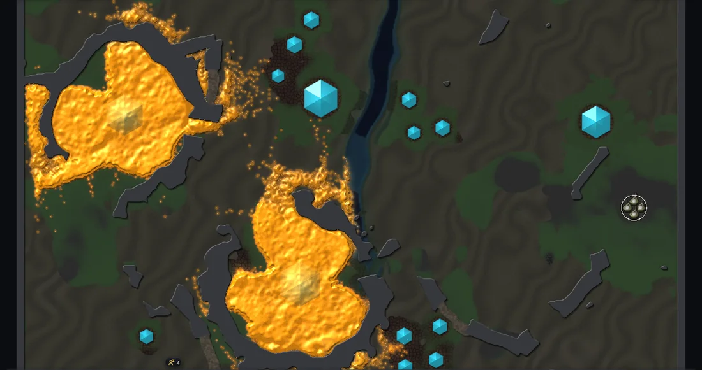
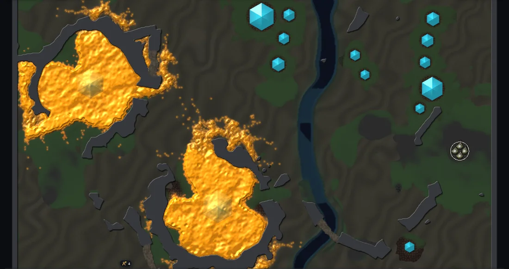
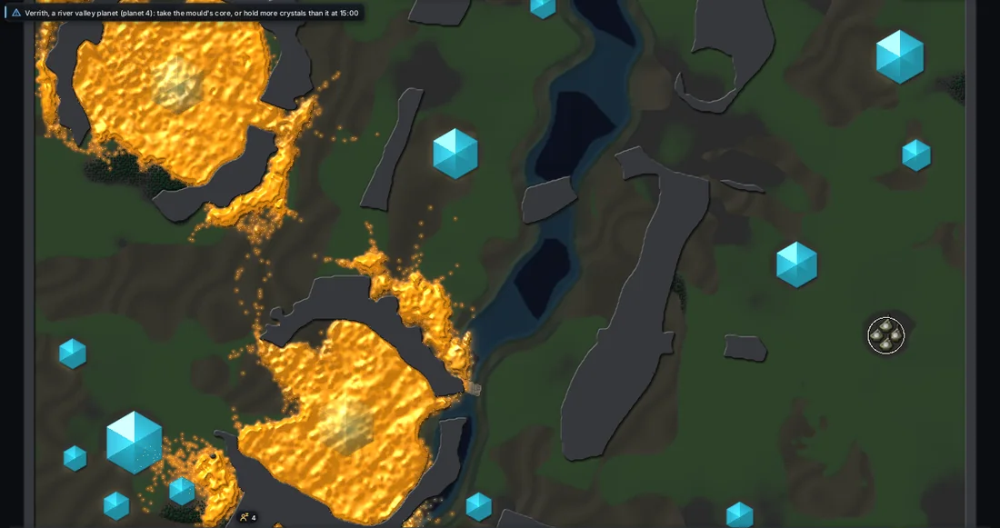
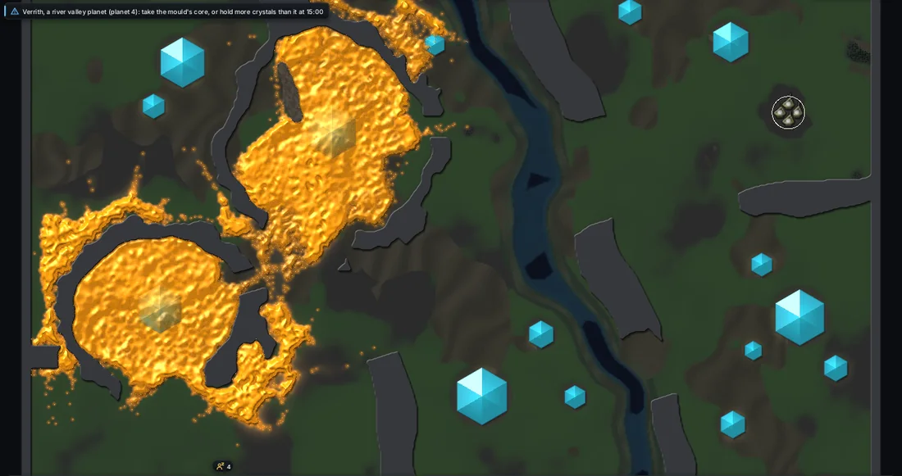
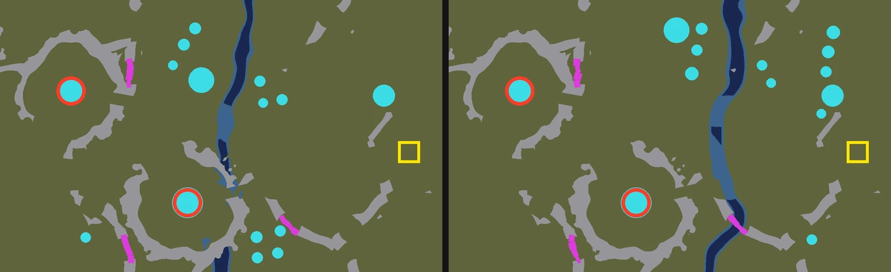
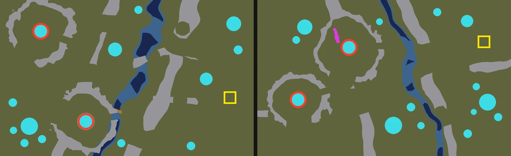
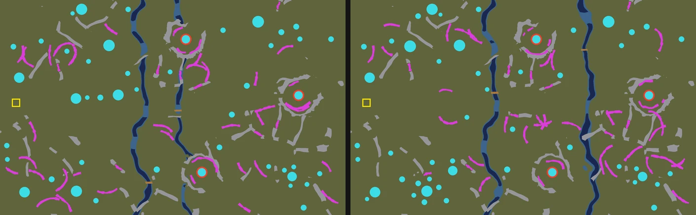

Rivers run across the route between the landing and the nests, and the second nest often stood right on one. Water is cleared round a nest, so the river ran dry there and the nest itself became the crossing: the slime held it from the start. Now each river moves along the route the least it must to keep off every nest's bowl, and its fords and bridge keep farther off still. Every picture pairs main (before) with this change (after): same planet, same seed, same moment.
Distances are straight from a nest's centre in map cells, two to a dish cell. Moving a river rolls the rest of the planet again, so crystals and rock differ between the pictures; the landing and the nests stay put.
The squad lands on the right; the nests are on the left.
river water from the second nest 118 → 225 map cells · the first nest 407 → 527
Before, the river stops at the lower nest's bowl and starts again below it: the bowl is the way across. After, the river runs the map's height, between the landing and both nests.


river water from the second nest 119 → 224 · its bridge 147 → none (this river rolled no bridge)
Before, the bridge stood at the second nest's door. After, the river runs clear of both bowls.


From the second nest at zoom 3, a frame every 3 s to 58 s, no hands on the controls.
Before, the slime is on the bridge by the end of the minute, the river to the bowl's right. After, the river is off to the right of the frame's middle and the slime reaches for the crystals on this side of it.
Before, the river comes down to the bowl's top right and ends there. After, it passes outside the bowl's rim on the right; the slime sends a thread toward it along the back road, which crosses the river there in the shallows.
Before on the left, after on the right. Deep water dark blue, shallows light blue, bridge decks brown, rock grey, hedges magenta, crystals cyan, nests ringed red, the landing a yellow square.


river water from its nests 840, 114, 137 → 383, 287, 252
Before, the second river ran past two of the three nests, through their bowls. After, it runs between those two and the third, clear of all three.

| Before | After | |
|---|---|---|
| Valley nests with river water within 220 (of 40) | 19 | 0 |
| Valley nests' nearest river water, median (least) | 302 (118) | 450 (221) |
| Core-world nests with river water within 220 (of 15) | 7 | 0 |
| Core-world nests' nearest river water, median (least) | 223 (114) | 400 (231) |
| Valley fords and bridges within 220 / 320 of a nest | 16 / 31 of 57 | 0 / 0 of 51 |
| Valley fords and bridges, nearest / median | 45 / 286 | 320 / 437 |
| Core-world fords and bridges within 220 / 320 of a nest | 6 / 8 of 26 | 0 / 0 of 26 |
| Valleys with two rivers | 7 | 4 |
| First-try builds, valleys / core worlds (of 20) | 18 / 17 | 17 / 17 |
| Valley build, mean per planet (median of three runs) | 265 ms | 277 ms |
The back road to a nest's breach is still made shallow where it crosses deep water, so a shallow crossing can sit just outside a bowl (18 of 40 valley nests have one within 300). That is the road to the breach; the fords and bridges the river is given are all 320 or more away.